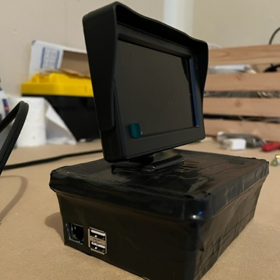

Jonathan Haidt outlined three theories of how passion and reason work in our minds in the book
The Righteous Mind. I used AI to develop photos of each philosopy...
Published: UNDER DEVELOPMENT
Updated: 2022-12-10
This is a OLED attachment to the doorbell to display messages and images. It is connected via WiFi
and can be controlled via a phone with internet. This all started with the wife needing...
Published: 2022-08-01
Updated: 2022-08-01

This is a major hardware update from the CRT IoT project. 30 years in the future (from 1955), the
LCD TV was released and conveniently came with component ports. Unlike it's predecessor, the LCD IoT
actually ...
Published: 2022-05-03
Updated: 2022-05-03
For this project a raspberry pi will be converted to a miner, working with a pool of others to solve
cryptographic puzzles. To fully understand this process we must start with the whitepaper...
Published: 2022-04-09
Updated: 2022-04-11
 Smart contracts are a way of automatically executing transactions on the Ethereum blockchain. This project
will cover the basics of these topics as well as the creation of a smart contract to deploy a...
Smart contracts are a way of automatically executing transactions on the Ethereum blockchain. This project
will cover the basics of these topics as well as the creation of a smart contract to deploy a...
Published: 2022-04-03
Updated: 2022-04-03
This could be considered a nostalgia machine, a old CRT that has been upgraded with internet capabilities
which enables viewing of cartoons from years past. Specifically the TV show from...
Published: 2022-04-02
Updated: 2022-05-03
This is a python script that solves the Wordle Puzzle. It was developed specifically to assist me in the
middle of a game of Wordle. It also works to solve the puzzle from start to finish...
Published: 2022-02-12
Updated: 2022-02-26
 This is a directory and the files within that make up a website, meta. It was make from scratch
so no online website builders like Wix or SquareSpace. It is the first time I ever used...
This is a directory and the files within that make up a website, meta. It was make from scratch
so no online website builders like Wix or SquareSpace. It is the first time I ever used...
Published: 2022-02-23
Updated: 2022-02-26
 There is more to creating a website than just buying a cool domain name. This is a project that uses
a raspberry pi to host the files of this website. This is a very low cost way to experiment with web hosting...
There is more to creating a website than just buying a cool domain name. This is a project that uses
a raspberry pi to host the files of this website. This is a very low cost way to experiment with web hosting...
Published: 2022-02-21
Updated: 2022-02-26